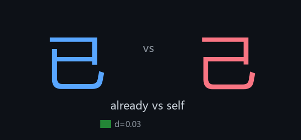
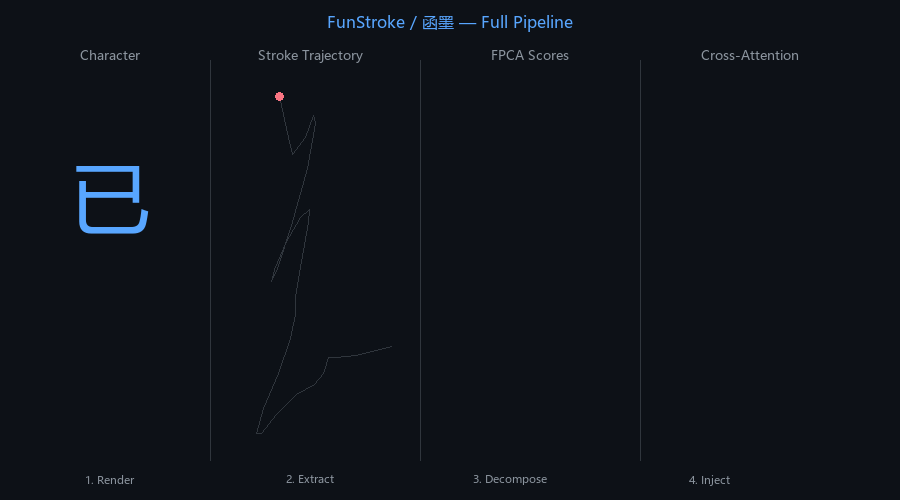
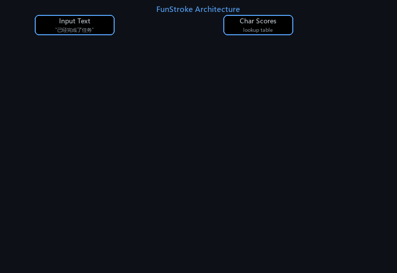
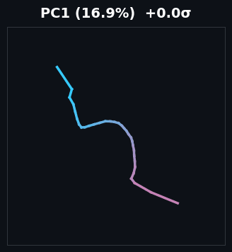
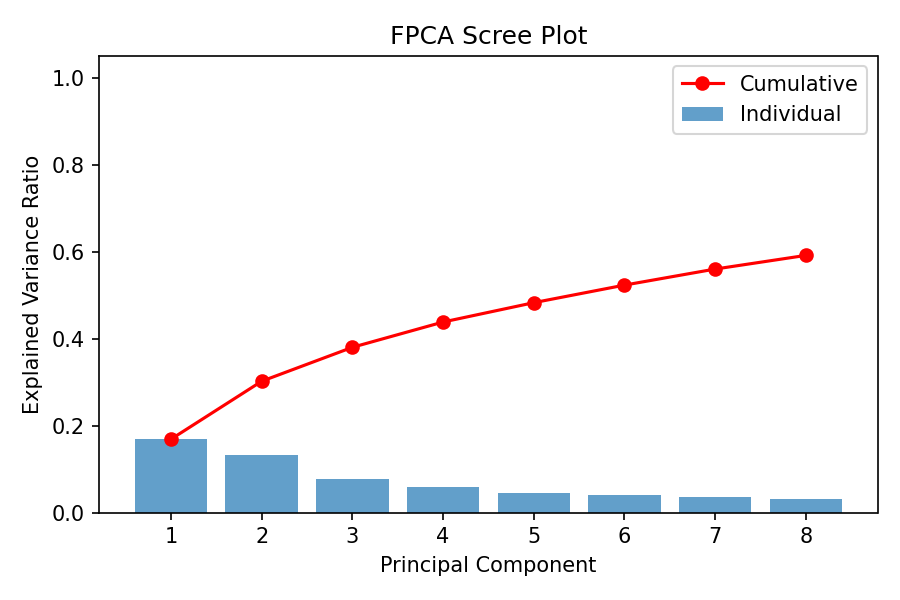
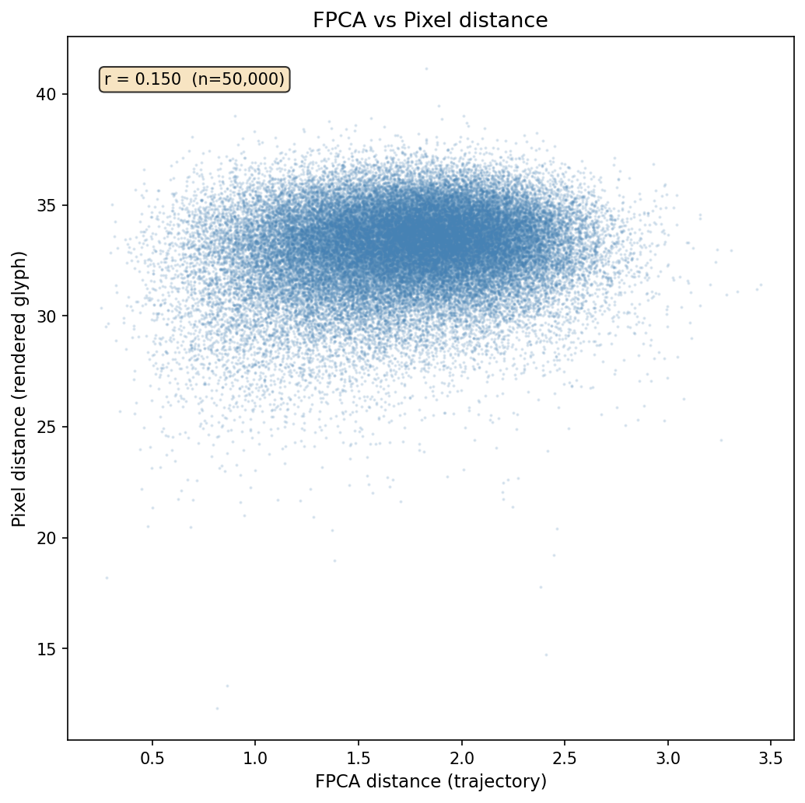
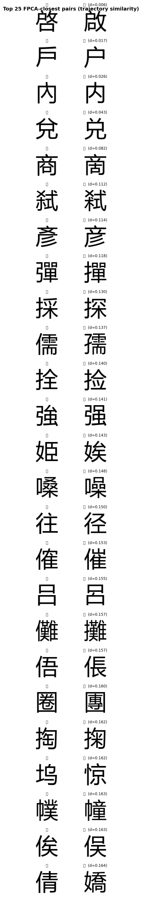
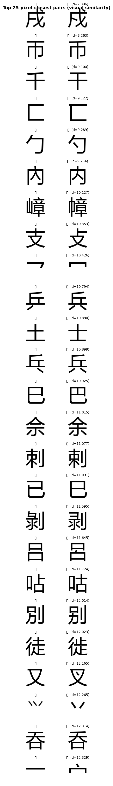
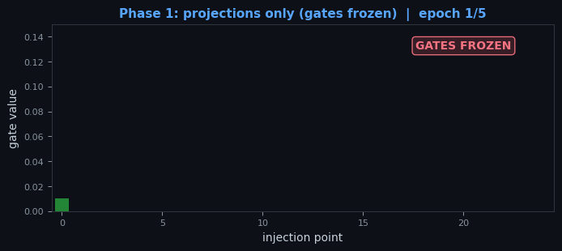

FunStroke / 函墨: Teaching LLMs to See Chinese Characters

Can an LLM tell 己 from 已 from 巳 — if you show it what the strokes look like? Chinese LLMs treat characters as opaque token IDs. Characters that are visually near-identical but semantically unrelated get mapped to completely unrelated embeddings. One corrupted character sends the model to a different region of embedding space entirely.
FunStroke injects stroke trajectory structure into a frozen LLM via cross-attention at every layer, using functional PCA scores and learned gates. No CNN. No pixel rendering at inference. Just 1.6M trainable parameters steering a 494M-parameter language model.
The Problem: Tokens Are Blind
Token embeddings for 己 (self) and 已 (already) are arbitrary vectors — token ID 99270 vs 36667 in a 152K vocabulary. The LLM has no way to know these characters look nearly identical. It learned their meanings from co-occurrence statistics, not from visual form.
| Input | Intended | What the LLM sees |
|---|---|---|
| 己经 | 已经 (already) | Completely different token embedding |
| 未来 | 末来 (end) | Completely different token embedding |
| 太阳 | 大阳 (big) | Completely different token embedding |
Stroke FPCA scores encode that 己 and 已 share almost the same pen path (L2 distance = 0.18 in 8-dim space). When one gets corrupted to the other, the token ID jumps from 36667 to 99270 — a completely different embedding vector. But the stroke scores barely change. Cross-attention lets neighboring tokens "see" this visual stability and recover the intended meaning.
When Does This Matter?
FunStroke targets settings where the LLM's input has already been corrupted — the text arrives with visually similar characters swapped, and the model needs to be robust to that noise.
| Source | What happens | Why tokens alone struggle |
|---|---|---|
| OCR pipelines | Scanner confuses 大/太, 未/末 | Valid but wrong token; no visual signal |
| Handwriting recognition | Recognizer picks wrong candidate | Token-level blindness, high error rates |
| Input method errors | User accepts wrong suggestion | Ambiguous context can't always recover |
The Full Pipeline

Character → stroke trajectory drawn point-by-point → FPCA decomposition into 8 scores → cross-attention injection into the transformer.How It Works

At each of 25 injection points, a cross-attention module queries the stroke features of all tokens in the sequence.At each of 25 injection points (embedding + 24 transformer layers), a cross-attention module lets every token attend to every other token's stroke features. When the model sees "己经", token "经" can look at the stroke features of "己" and learn it resembles "已" — enabling cross-position disambiguation that additive injection cannot do. A learned gate at each layer controls how much stroke signal to mix in.
Stroke Trajectories as Functional Data
Each character's pen path is extracted from Make Me a Hanzi, resampled to 32 evenly-spaced points, and decomposed via Functional PCA into 8 interpretable components.

Mean stroke trajectory perturbed along each of the 8 principal components. Red = positive direction, blue = negative.
8 components capture 59.1% of variance across 9,574 characters.| Component | Variance | Captures |
|---|---|---|
| PC1 | 16.9% | Overall trajectory scale and direction |
| PC2 | 13.3% | Left-right spread vs vertical compression |
| PC3 | 7.8% | Enclosure / loop structure |
| PC4 – PC8 | 21.1% | Finer stroke detail |
Characters close in this 8-dimensional space share visual structure. The confusion discovery module identifies 1,916 characters with at least one confusable neighbor.
FPCA vs Pixel Similarity
The FPCA representation captures structural stroke similarity, which is complementary to pixel-level visual similarity. The correlation between the two distance measures is just r = 0.15 — they measure fundamentally different things.

FPCA distance vs pixel distance (r = 0.15). The two similarity measures are nearly orthogonal.
FPCA-closest pairs (trajectory similarity)
Pixel-closest pairs (visual similarity)Two-Phase Training

Gate values across layers during two-phase training. Phase 1 trains projections with frozen gates; Phase 2 lets gates learn which layers to open.If both gates and projections start at zero, neither can bootstrap the other — the product is always zero, and gradients vanish for both. Phase 1 breaks the deadlock by freezing gates at a small nonzero value (0.01), giving projections a gradient signal to learn useful 8 → 896 mappings. Phase 2 then unfreezes gates so the model can decide where stroke info matters most.
Results
All comparisons use the same trained model in two modes: stroke features active vs zeroed out. The only variable is the stroke signal.
Strokes Help with Ambiguity
30 minimal pairs where one confusable character is swapped (e.g., "他已经到了" vs "他己经到了"). The model scores both; correct sentence should have lower perplexity.
| Condition | Accuracy | Verdict |
|---|---|---|
| Without strokes | 56.7% (17/30) | |
| With strokes | 66.7% (20/30) | +10pp |
Strokes Improve Robustness
Perplexity measured on 5K clean + 3.7K corrupted examples. The robustness gap — how much worse the model performs on corrupted vs clean text — shrinks by 1.07 when strokes are active.
| Clean PPL | Corrupt PPL | Gap | |
|---|---|---|---|
| Without strokes | 9.43 | 19.46 | 10.03 |
| With strokes | 8.75 | 17.71 | 8.96 |
Notably, stroke injection doesn't just avoid hurting clean performance — it actively improves it (9.43 → 8.75, −7.2%). The cross-attention provides useful structural context even when all characters are correct.
Representation Evaluation
Beyond output quality, we measure whether stroke injection changes what the model internally represents. All 9,574 characters are passed through the model individually, and hidden states are extracted with strokes active vs zeroed.
| Metric | Without strokes | With strokes | Δ |
|---|---|---|---|
| RSA (Spearman ρ) | −0.008 | +0.110 | +0.118 |
| Linear probe R² | −0.061 | +0.253 | +0.314 |
RSA: Pairwise cosine distances between hidden states are compared against pairwise FPCA L2 distances. Without strokes, hidden geometry is uncorrelated with visual structure (ρ ≈ 0). With strokes, characters that look alike are now closer in hidden space.
Linear probe: A Ridge regression predicts 8-dim FPCA scores from hidden states. Without strokes, R² is negative (token embeddings encode zero visual form). With strokes, R² = 0.25 — confirming that cross-attention injects recoverable visual structure into the representation.
Generation Examples
Generation from corrupted prompts, comparing the trained model with and without stroke injection:
| Corrupted prompt | Mode | Response |
|---|---|---|
| "这个问题大难了" (should be 太难了 = too hard) |
With strokes | Relevant response addressing difficulty |
| Without strokes | Off-topic response about Python regex | |
| "己经完成了任务" (should be 已经 = already) |
With strokes | Coherent: "task is done, save it" |
| Without strokes | Generic AI intro (derailed) |
Architecture at a Glance
| Component | Params | Trainable | Notes |
|---|---|---|---|
| Qwen2.5-0.5B-Instruct | 494M | Frozen | bfloat16, from HuggingFace |
| FPCALayer (64 → 8) | 520 | Yes | Initialized from eigenfunctions |
| StrokeCrossAttention ×25 | 1.63M | Yes | Q/K: 64d, V: 896d, per-layer gate |
Total trainable: ~1.63M parameters (0.33% of model). Checkpoint size: ~370KB (backbone not saved).
Try It
The full codebase, data pipeline, and evaluation scripts are open-source. Built with Qwen2.5-0.5B, PyTorch, and functional PCA on stroke trajectories from Make Me a Hanzi (9,574 characters).